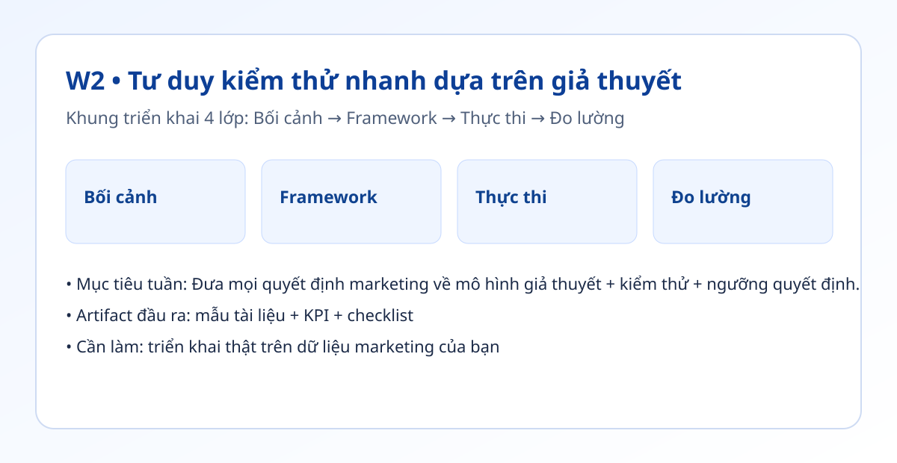

Hình trực quan mô-đun

Bối cảnh thực tế
- Không ít chiến dịch thất bại vì thay đổi quá nhiều biến cùng lúc nên không biết yếu tố nào thực sự hiệu quả.
- Kiểm thử nhỏ giúp giảm rủi ro ngân sách, đồng thời tăng tốc độ học nhanh của đội marketing.
- Tuần này bạn xây backlog giả thuyết và cơ chế quyết định rõ giữ/cải tiến/dừng.
Khung tư duy cốt lõi
- Công thức giả thuyết: Nếu [hành động], thì [chỉ số] sẽ [mức thay đổi] vì [lý do].
- Ma trận ưu tiên ICE: Impact × Confidence × Ease.
- Luật quyết định 3 mức: vượt KPI, gần KPI, thấp hơn KPI đáng kể.
Quy trình triển khai chi tiết
- Bước 1: Viết tối thiểu 10 giả thuyết từ các điểm có thể tác động: hook, CTA, định dạng, thời điểm đăng.
- Bước 2: Với mỗi giả thuyết, gắn 1 KPI chính và 1 KPI phụ để tránh tối ưu lệch.
- Bước 3: Chấm điểm ICE, chọn 3 giả thuyết có điểm cao nhất để kiểm thử trước.
- Bước 4: Thiết kế kiểm thử nhỏ trong 7 ngày: chỉ thay 1 biến, giữ các yếu tố khác ổn định.
- Bước 5: Tạo bảng quyết định tự động: đạt KPI thì mở rộng, gần KPI thì tinh chỉnh, không đạt thì dừng.
- Bước 6: Tổng kết bài học theo mẫu: điều gì hiệu quả, điều gì không, bước tiếp theo là gì.
Tình huống nhỏ với số liệu
| Giả thuyết | Mục tiêu KPI | Kết quả 7 ngày |
|---|---|---|
| Câu mở đầu dạng dữ liệu | CTR >= 2.5% | 3.1% (mở rộng) |
| CTA nhận checklist qua DM | Khách hàng tiềm năng >= 25 | 18 (cải tiến) |
| Carousel 6 trang | Lưu >= 120 | 60 (dừng) |
Kết luận: Khi tách rõ từng biến và đặt ngưỡng quyết định từ đầu, đội marketing giảm tranh luận cảm tính và tăng tốc ra quyết định.
Sản phẩm bàn giao tuần này
- Danh sách giả thuyết 10+ mục.
- Bảng chấm ICE có thứ tự ưu tiên.
- Bảng quyết định kiểm thử theo ngưỡng KPI.
Bài tập thực hành (45-60 phút)
- Chọn 1 kênh đang chạy (ví dụ Facebook Ads hoặc LinkedIn).
- Viết 3 giả thuyết, chạy kiểm thử nhỏ trong 5-7 ngày.
- Chốt quyết định bằng dữ liệu, không tranh luận theo sở thích.
Thang đo hoàn thành
| Mức | Mô tả |
|---|---|
| Mức 0 | Có ý tưởng nhưng không có KPI |
| Mức 1 | Có KPI nhưng thiếu ngưỡng quyết định |
| Mức 2 | Có kiểm thử 1 biến và có kết luận |
| Mức 3 | Có danh sách giả thuyết + ưu tiên + quy tắc mở rộng |
Lỗi thường gặp
- Thay quá nhiều biến một lúc.
- Đặt KPI không thực tế so với mốc nền.
- Không ghi lại bài học sau kiểm thử nên lặp lỗi cũ.
Video thực hành (tùy chọn)
Phần học chính đã đầy đủ bằng văn bản và ví dụ. Nếu bạn muốn xem thao tác thực tế, dùng các video gợi ý sau:
Đánh dấu tiến độ
Tuần này chưa hoàn thành
Đã hoàn thành tuần 2